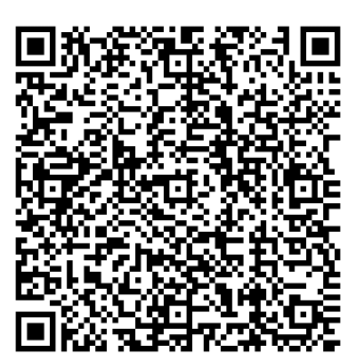

🌊 Marine Command Center
Semua informasi kapal, laut, navigasi, traffic, keselamatan, operasi, sosial, dan AI dalam satu dashboard map-first.
⚓ Semua rencana kita
🔌 Data source & perangkat
Tekan “Provider” untuk melihat status integrasi.
🌐 Sumber dunia nyata
Enam konektor berikut sengaja ditampilkan penuh di APK. Saat kredensial/izin/perangkat tersedia, adapter yang sama dipakai untuk data live. Tanpa sumber tersebut aplikasi tidak memalsukan target, chart, radar, atau forecast.
📡 Sumber publik yang bisa diaktifkan
🆓 Semua fitur tanpa API berbayar
Mode ini memprioritaskan GPS, sensor HP, penyimpanan lokal, open-data, algoritma lokal, dan provider publik. Provider premium tidak wajib untuk menjalankan core Marine OS.
🛟 Safety Guardian
Hazard, weather, AIS, route, anchor watch, SOS dan emergency assistant akan terhubung di sini.
🤖 Mazkiplay.ai
AI multimodal untuk membaca konteks kapal, peta, cuaca, AIS, dokumen dan data operasi melalui tools yang diizinkan.
Selamat Bekerja, Bos Kapal! 🚢
Semoga cuaca aman dan hasil tangkapan berlimpah.
📍 Posisi Sekarang
- , -
- , -
Kecepatan kapal: - knot
Area ombak: belum tersedia
Akurasi: - m
Kedalaman: menunggu...
Karang sekitar: menunggu posisi GPS...
GNSS menunggu izin lokasi...
🧭 Kompas
--°
Ketuk kompas untuk mengaktifkan sensor
🌤️ Cuaca Singkat
Memuat...
🌊 Ombak
Memuat...
🔔 Notifikasi Resmi
Pembaruan hanya dari sumber resmi BMKG yang dapat diverifikasi. Tidak ada berita buatan.
🕌 Jadwal Sholat
Memuat jadwal sholat...
Jadwal mengikuti zona waktu koordinat GPS kapal.
Bismillah, semoga perjalanan diberkahi.
⚓ Akses Cepat
Navigasi & kondisi laut
Operasi & pencatatan
💬 Semangat Hari Ini
"Laut tidak pernah mengkhianati yang berjuang."
🗺️ Peta Laut Real-Time
🌬️ Angin, ombak & prakiraan waktu
Windy global dengan layer angin, hujan, gelombang, swell, suhu, tekanan, awan, radar, dan timeline. Titik pusat mengikuti GPS HP.
Klik peta / tombol untuk ukur kedalaman laut.
Ketinggian - • Arah -
Waktu perjalanan: belum dimulai
Kecepatan - knot • Suhu - • Angin -
Cek apakah ada karang, batu, terumbu, atau kapal karam terpetakan dalam radius 1 km.
🎯 Router Perjalanan
Masukkan koordinat tujuan atau ketuk peta.
🌤️ Cuaca Real-Time
🌊 Kondisi Laut
📅 Prakiraan 3 Hari
📰 Berita & Peringatan BMKG Maritim
📖 Al-Qur’an Digital
114 surat lengkap dengan Arab, latin, terjemahan Indonesia, dan audio surat.
Memuat daftar surat...
Pilih salah satu surat di atas.
Sumber data: EQuran.id API v2 • sumber konten Kementerian Agama Republik Indonesia. Audio dimuat online dari CDN EQuran.id.
👤 Profil Pelaut
Tidak ada login, password, OTP, atau Google. Masukkan email atau nomor HP, lalu Marine OS membuat ID profil otomatis.
⚓ Buat ID otomatis
Identitas perangkat dibuat otomatis. Kontak belum diverifikasi.
Profil Saya
📸 Story Berkah Samudera
Bagikan foto, video maksimal 60 detik, atau teks kepada teman yang saling follow.
Masuk ke menu Akun untuk membuat dan melihat story teman.
➕ Buat Story
📰 Story Teman
Memuat story...
👁️ Riwayat tontonan story saya
Belum ada data tontonan.
🐟 Catatan Hasil Tangkapan Harian
Memuat quotes...
📦 Catatan Kolekting (Pengiriman Ikan)
⛽ Catatan Bahan Bakar Kapal
🥘 Catatan Logistik / Perbekalan
👥 Database Kru Kapal
Daftar Kru
⚙️ Pengaturan Operasi
Atur identitas kapal, sinkronisasi online, dan tampilan navigasi.
🚢 Identitas Kapal
🕌 Pengingat Waktu Sholat
Jadwal otomatis mengikuti zona waktu dari titik GPS terkini. Saat waktu tiba, Android menerima notifikasi pengingat dengan suara notifikasi bawaan perangkat.
Jadwal diperbarui dari lokasi GPS.
🔔 Notifikasi Berita Resmi
Aktifkan izin notifikasi Android. Aplikasi memeriksa sumber resmi saat online dan memberi notifikasi hanya jika data berubah.
Pemeriksaan otomatis setiap 10 menit saat aplikasi online.
📱 Penyimpanan Lokal HP
Semua data aplikasi disimpan di penyimpanan HP pengguna: rute, GPS, kru, tangkapan, perbekalan, riwayat, jadwal sholat, dan pengaturan. Aplikasi tidak membutuhkan backend atau akun.
✅ Mode lokal aktif • offline-first🧭 Navigasi
🛟 Keselamatan
GPS/GNSS, cuaca, bathymetry, dan deteksi karang adalah alat bantu. Tetap gunakan peta navigasi resmi, radar, dan sounder saat melaut.
💝 Donasi untuk Pengembangan APK
Dukungan Anda membantu kami merawat server, memperbaiki fitur, dan terus mengembangkan Berkah Samudera agar semakin nyaman digunakan para pengguna.

Scan QRIS di atas menggunakan aplikasi pembayaran Anda. Terima kasih atas dukungan dan kepercayaannya.
🚢 Berkah Samudera10
Aplikasi pendamping operasi kapal untuk memantau GPS, rute perjalanan, cuaca laut, gelombang, Windy global, kedalaman GEBCO, karang terpetakan, kompas, kru, tangkapan, perbekalan, dan log riwayat.
Terima kasih telah menggunakan aplikasi kami. Semoga Berkah Samudera membantu perjalanan Anda menjadi lebih aman, rapi, dan nyaman.
Dikembangkan dan disponsori by.m4zk1pl4y
Versi aplikasi 1.0.18